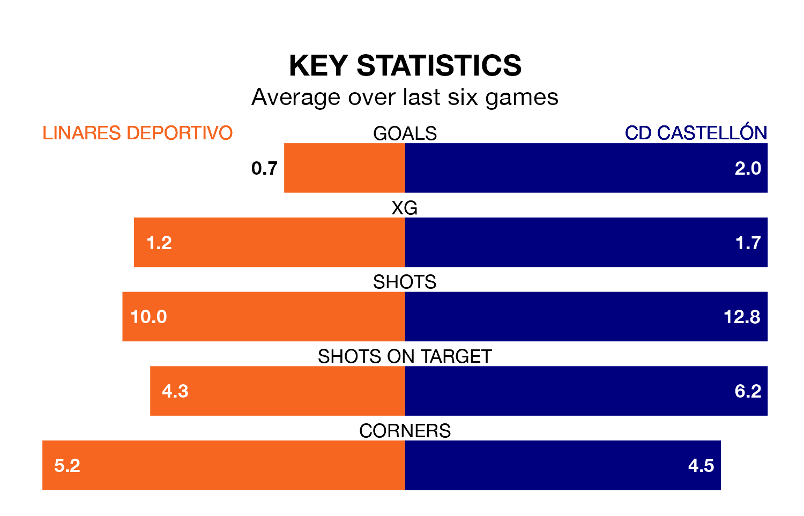

Relegation candidates Linares Deportivo face a challenge against high-flying CD Castellón at Estadio Municipal de Linarejos on Sunday.
Linares Deportivo are 17th in the Primera Division RFEF Group 2 table, and have picked up eight wins and eight draws in their 32 games to date.
Castellón, meanwhile, are top of the standings with 72 points, having won 23 and drawn three.
With 67 goals in 32 games so far this season, Castellón are the league's highest scorers with 2.1 goals per game. And they are conceding fewer than average, letting in 32 goals at a rate of 1.0 per game.
Linares Deportivo, meanwhile, are below average scorers, with 0.8 goals per game, compared to a league average of 1.1. They have conceded 1.4 goals per game.
In Jesús De Miguel Alameda, the visitors have the league's most on-form striker so far this season. He has notched 15 goals in 23 appearances.
His goal rate of one every 128 minutes is quicker than that of Antonio Luis Díaz Sánchez, the home side's top scorer with a goal every 245 minutes, and a total of five goals in 22 games.
Linares Deportivo are in disappointing form in Primera Division RFEF Group 2, with one win and two draws from their last six games.
With four wins and two losses over that period, Castellón's form is much better – they have taken 12 points from 18, compared to Linares Deportivo's five.
In the last three years, Linares Deportivo and Castellón have played each other on three occasions. They won one each, and they drew once.
Their last meeting was on December 2, when Castellón won 4-1 at home.
Linares Deportivo's last match was on April 14, a 4-0 loss against Ceuta.
Castellón beat Granada B 3-0 last time out, also on Sunday, with Gervane Kastaneer, Raúl Sánchez and Sergio Dueñas Ruiz on the scoresheet.
Updated: 11:31 (UTC), 15/04/24